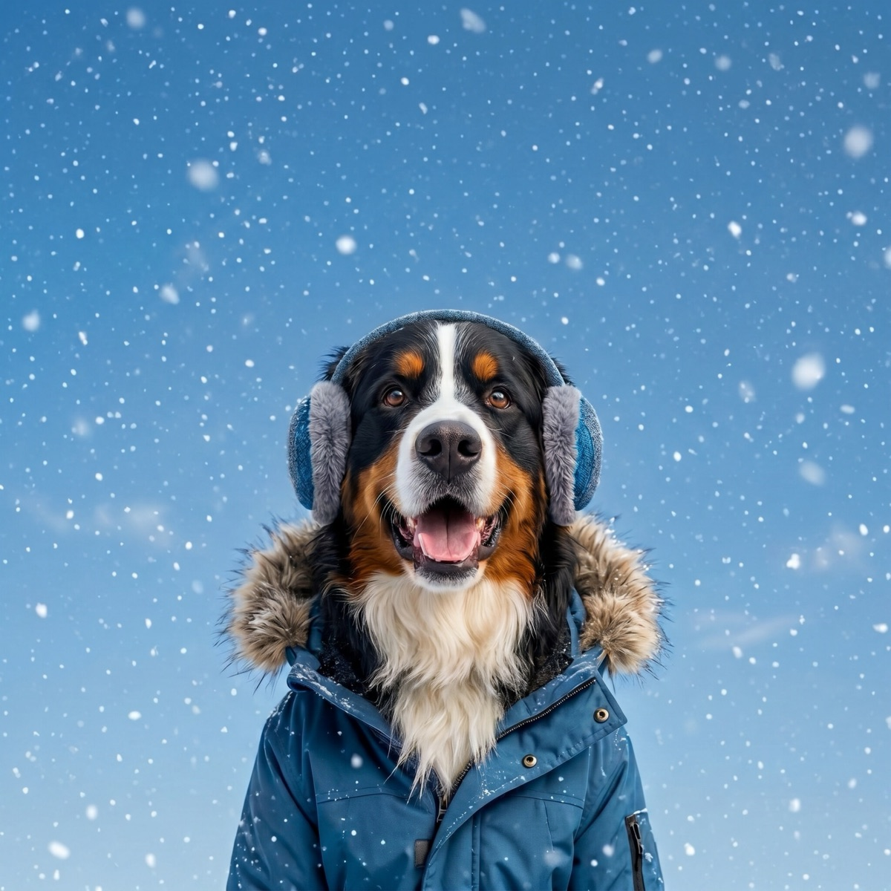

German Shepherd Winter Care: Cold-Weather Guide
A German shepherd meets the first snowfall like it is a personal gift. This is a breed genuinely built for cold work, but "built for it" is not the same as "needs nothing from you." Winter with a GSD is about managing energy, paws, and aging joints, not bundling them in a parka. Here is the playbook.
The coat can handle a lot
The German shepherd wears a classic working double coat: a dense, medium-length outer layer over a thick, insulating undercoat. The American Kennel Club's German Shepherd Dog breed profile describes that medium-length double coat, developed for a dog expected to work outdoors in all weather. In practice, a healthy adult GSD is comfortable in temperatures that send most breeds (and their owners) hustling back inside, and most do not need a winter jacket for normal walks.
The insulation only works if the coat stays dry, though. A soaked undercoat loses its loft and chills instead of warming, so towel your shepherd off thoroughly after wet snow or slush, especially the belly and legs.

The engine still needs to run
Here is the part that catches new GSD owners: winter reduces your motivation, not your shepherd's. This is a high-drive working breed that needs one to two hours of real physical and mental work daily, year-round. Skip it for a week of cold snaps and you will meet the consequences in the form of chewed furniture, fence patrolling, and creative self-employment.
Cold, crisp days are actually prime GSD conditions: long walks, snow fetch, tracking games in the yard. When conditions turn truly nasty, move the workload indoors: scent work, puzzle feeders, obedience sessions, and hallway games all spend the same energy budget. Our guide to indoor exercise for dogs has a full menu for blizzard days.
Paws, salt, and ice
The biggest everyday winter hazard for a GSD is not the cold, it is the sidewalk. De-icing salt and chemical ice melts irritate and dry out paw pads, and dogs then lick the residue off, which can upset the stomach or worse. After every walk on treated pavement, rinse or wipe all four paws, and check between the toes for packed ice balls. Trimming the fur between the pads reduces ice buildup. Paw balm before walks adds a protective layer, and for dogs that tolerate them, winter booties solve the whole problem at once. We break down which products are safest in our guide to ice melt, salt, and paw safety.
Cold weather and those famous hips
German shepherds are one of the breeds most associated with hip dysplasia, an inherited looseness of the hip joint that commonly leads to arthritis. VCA Animal Hospitals' guide to hip dysplasia in dogs covers how it develops and why large breeds like the GSD are predisposed. Many owners notice arthritic dogs move more stiffly in winter: cold muscles, slippery footing, and more time lying still all make sore joints feel worse.
For a senior shepherd or one with known hip trouble: warm up with a few gentle minutes before hard play, favor several shorter outings over one marathon, keep them off icy patches where a slip can really cost them, and give them a thick orthopedic bed away from cold drafts and tile. If the winter stiffness is new or worsening, that is a vet conversation; modern arthritis care has more options than it did even five years ago.
Winter coat care: brush, do not bathe
That undercoat thickens for winter, and your job is mostly to keep it clean and aired out. Brush a few times a week with an undercoat rake to prevent matting, since a matted undercoat insulates poorly. What you should not do is bathe frequently: winter air is dry, and over-bathing strips the skin oils that keep the coat weatherproof and the skin comfortable. Unless there is mud or mystery filth involved, a GSD in winter needs far fewer baths than you think, and a thorough dry-off afterward is non-negotiable.
When even a shepherd heads inside
Tough is not invincible. The AVMA's cold weather animal safety guidance makes the point that no dog should be left outside for long periods in below-freezing weather, working breed or not. Deep subzero cold, brutal wind chill, and freezing rain shorten the clock for everyone. Watch for shivering, lifted paws, reluctance to move, or your normally tireless dog angling for the door: a GSD asking to go in means conditions are genuinely bad. Puppies and seniors have much less margin than a fit adult. For the actual numbers, see our guide to how cold is too cold for your dog, and if you are curious how the GSD stacks up against the true polar specialists, our list of dog breeds built for cold weather has the rankings.
Read the conditions, then commit
The winter question with a shepherd is rarely whether to go out, it is how long and how hard. A quick morning check of the temperature and wind chill sets the plan. WeatherPets turns that check into the best part of the routine: your own dog delivers the forecast and a Live Activity tracks conditions through the day, so you will know whether this afternoon is a two-hour snow patrol or a quick loop and a living-room training session.